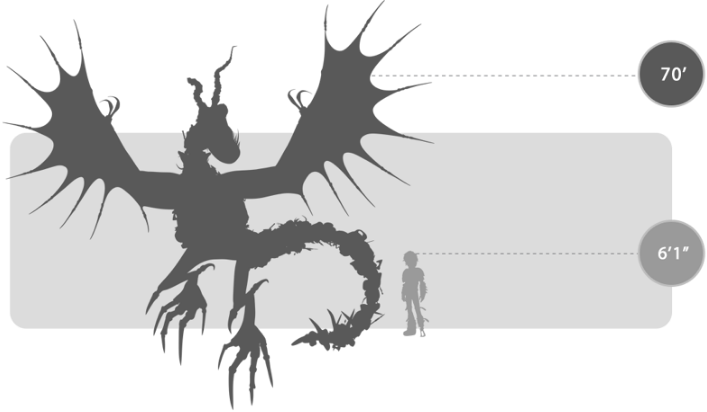
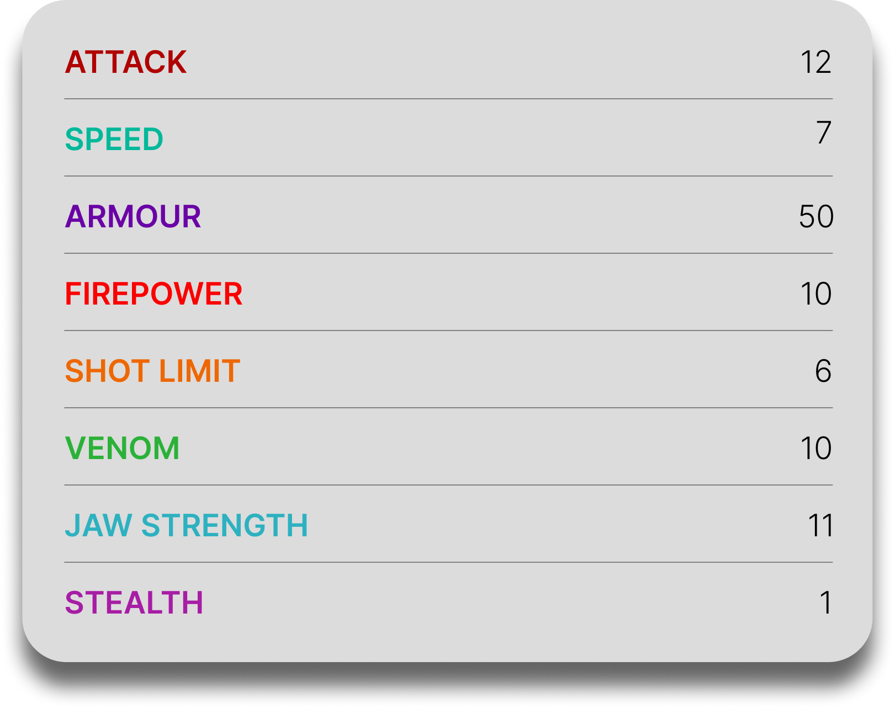

Armorwing
General Overview
The Armorwing is a large dragon belonging to the Mystery Class. Often referred to as the "welding dragon," it is known for covering its body with scraps of metal, which it attracts magnetically and fuses into an ever-expanding coat of armor. Although it appears heavily protected and intimidating, the Armorwing is actually a vulnerable dragon beneath its metal shell and prefers isolation over conflict whenever possible.


Physical Appearance
- Body & Color: It has a pale, scaleless body that is usually covered with fused pieces of metal armor, often in irregular layers of scrap and ore.
- Head & Face: Its head is long with a prominent underbite, bulging yellow eyes, a single nasal horn, and twisted horns that give it a rugged appearance.
- Appendages: It has long claws and strong limbs, with long spikes on its knees that add to its defensive look.
- Wings & Tail: Its wings are left bare despite the armored body, while its long tail is heavily fortified and can be used like a whipping chain weapon.
Abilities and Combat
- Magnetic Body: It can attract metal objects directly onto its body, making use of any nearby scrap to strengthen its defenses.
- Welding Fire: Its oxy-acetylene flames are hot and bright enough to weld metal together and can temporarily impair the vision of humans and dragons.
- Metal Armor: It creates a durable armored shell by fusing metal onto its vulnerable skin, allowing it to withstand multiple attacks.
- Strength and Agility: Despite its heavy armor, it remains surprisingly agile, able to fly, hover, turn sharply, and move quickly on the ground.
- Flame-resistant Wings: Even though its wings are unarmored, they are capable of deflecting dragon fire.
- Chain-Whip Tail: Its long, reinforced tail can be swung like a flail and can even launch flaming metal projectiles in combat.
Behavior and Personality
- Intelligence: It is cautious and perceptive, especially when protecting itself or judging whether someone can be trusted.
- Temperament: Armorwings are territorial, defensive, and aggressive when their hoard or personal safety is threatened.
- Behavior: They spend much of their time collecting and guarding metal scraps, which are essential for maintaining their protective armor.
- Social Traits: They are mainly solitary dragons, preferring to remain alone with their hoarded treasures rather than living socially.
- Trust: Although difficult to approach, they can begin to bond when offered metal peacefully and without threatening behavior.